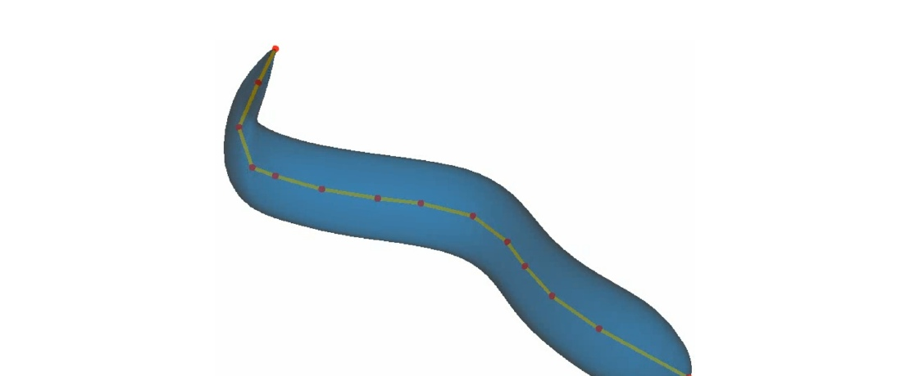
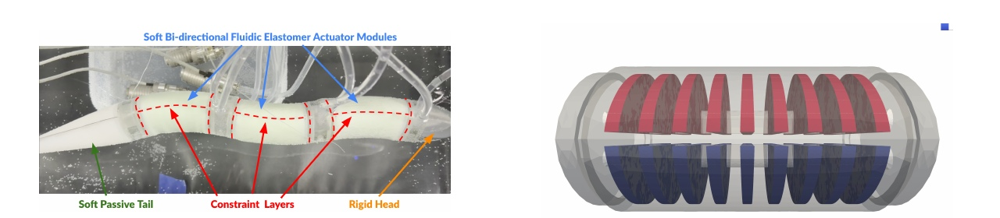

We apply multidisciplinary control co-design to eel-inspired soft robotic fish. Flexible-body motion couples actuation, structure, and hydrodynamics, making it difficult to predict how a shape change will affect swimming efficiency without a coupled model.
Updating the model with actuator measurements
The control co-design study optimizes shape and actuation, then uses measurements from a manufactured actuator to recalibrate the structural model. Re-optimization predicts lower energy cost than the control-optimized baseline at the prescribed higher speed; the swimming improvements are simulated, while the actuator calibration uses experimental data.
Paper: Fletcher et al. [1]
Resolving structural dynamics
A complementary study compares dynamic hydroelastic optimization with an approach using a static structural model. Similar design trends but different optimized dimensions show why structural-model fidelity matters when interpreting the predicted swimmer design.
Paper: Fletcher et al. [2]




Optimization problem
| Case | Eel-inspired swimmer: shape and actuation co-design |
|---|---|
| Objective | Minimize cost of transport, defined in this study as input power divided by swimming speed. |
| Design variables | 7 variables: actuation frequency (0.5–2 Hz), pump pressure (5–37.5 kPa), four body-width shape variables, and body height (4–13.35 cm). |
| Constraints | Zero net force at a prescribed swimming speed of 0.66 body lengths per second, with bounds on shape and actuation variables. |
| Models and conditions | Dynamic beam deformation and geometry, unsteady panel hydrodynamics, a boundary-layer model, and prescribed wake; nonlinear finite-element analysis supports the structural/actuator formulation. |
| Representative source | Multidisciplinary Control Co-Design Optimization of Anguilliform-Swimming Soft Fluidic Robots |
| Source locator | Section IV and Table 1, page 7. |
References
- Andrew Fletcher, Ru Xiang, Luca Scotzniovsky, Jacobo Cervera-Torralba, Michael T. Tolley, John T. Hwang. Multidisciplinary Control Co-Design Optimization of Anguilliform-Swimming Soft Fluidic Robots. IEEE International Conference on Soft Robotics (RoboSoft), 2025, 2025.PDF
@inproceedings{fletcher2025multidisciplinary, author = {Andrew Fletcher and Ru Xiang and Luca Scotzniovsky and Jacobo Cervera-Torralba and Michael T. Tolley and John T. Hwang}, title = {Multidisciplinary Control Co-Design Optimization of Anguilliform-Swimming Soft Fluidic Robots}, booktitle = {IEEE International Conference on Soft Robotics (RoboSoft)}, year = {2025} } - Andrew H. Fletcher, Ru Xiang, Jacobo Cervera-Torralba, Michael T. Tolley, John T. Hwang. Multidisciplinary Design Optimization of an Eel-Inspired Soft Robot. AIAA SciTech 2025 Forum; AIAA 2025-1751, 2025.PDF
@inproceedings{fletcher2025multidisciplinarya, author = {Andrew H. Fletcher and Ru Xiang and Jacobo Cervera-Torralba and Michael T. Tolley and John T. Hwang}, title = {Multidisciplinary Design Optimization of an Eel-Inspired Soft Robot}, booktitle = {AIAA SciTech 2025 Forum; AIAA 2025-1751}, year = {2025}, note = {Metadata verification: Crossref unavailable: HTTPError} }
Research connections